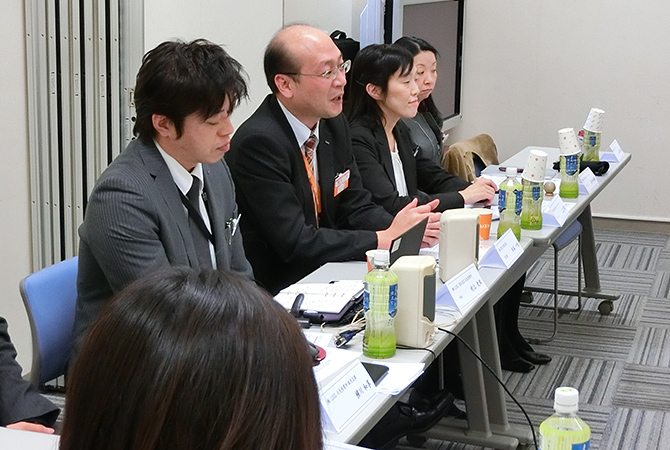

北見市 地域の皆さまとの対話－北海道支社 道北支店
地域の町内会長さまはじめ、市役所や社会福祉法人の方、保育士さんや中学校教頭先生など、様々な立場で活動されている皆さまと意見交換しました。
| 日時 | 2016年2月26日 |
|---|---|
| 開催場所 | LIXIL北海道支社 道北支店（北見営業所・北見ショールーム） |
| 社外ステークホルダー | 夕陽が丘町内会 町内会長 北見市役所 市民環境部 環境課 環境保全係 社会福祉法人 北見福祉会 夕陽ヶ丘認定こども園 保育士 2名 オフィスみついし 代表 国際ハーブヨガセラピスト ウィズ・プランニング 代表 高栄中学校 教頭 |
| 株式会社LIXILからの 参加者 |
松本 一也（道北支店 支店長） 村上 史郎（道北支店 北見営業所 所長） 横川 和享（道北支店 北見営業所 販売店課） 岩佐 澄恵（道北支店 営業部 キャンバサー） 四栗 友香（道北支店 営業部 キャンバサー） 小野 美里（道北支店 営業部 キャンバサー） 三上 多美（北見ショールーム マネージャー） 佐々木 摩美（北見ショールーム コーディネーター） 佐々木 理江（北海道支社 人事総務グループ グループリーダー） 加藤 圭葉（広報部 主査） 畠山 彩（広報部 主査） |
| ダイアログでの話題 | 地域とのかかわりやイベントなどLIXILが協力できることについて |
※所属・役職名は、ダイアログ開催当時の名称です。
地域の声を聴く
まず北見の地域性について教えていただき、LIXILへの要望や日頃の感想をうかがいました。
 ショールーム周辺地域の宅地開発は昭和54年くらいに始まりました。現在は少しずつ世代交代も進んでいますが、かなり高齢化しています。町内会としては高齢者の見守りをどうするのかという課題があります。近くに住んでいる縁もありますから「挨拶する・声を掛ける・迷惑をかけない」という心がけが大事だと思っています。LIXILの職員の方々には、いつも笑顔を絶やさず挨拶、会釈をしていただき、元気をもらっています。
ショールーム周辺地域の宅地開発は昭和54年くらいに始まりました。現在は少しずつ世代交代も進んでいますが、かなり高齢化しています。町内会としては高齢者の見守りをどうするのかという課題があります。近くに住んでいる縁もありますから「挨拶する・声を掛ける・迷惑をかけない」という心がけが大事だと思っています。LIXILの職員の方々には、いつも笑顔を絶やさず挨拶、会釈をしていただき、元気をもらっています。
市の人口は年々減っています。小さいお子さんは地域の宝なので、声掛けや温かい目で見守っていただきたいです。LIXILさんがこども110番に加盟しているなど、地域への姿勢を知ることができましたが、これからは付き合い方が変わってくると思います。
LIXILさんとは縁があって毎年場所をお借りして、小さいお子様向けの「ままごとキッチン」という体験型イベントを開催しています。毎年新しい企画を取り入れることで、子供たちにも「北見ってこんなに楽しい」「センスのあるものがある」と思ってもらい、地域貢献を当たり前のこととして感じてもらいたいと思っています。
北見市には心のサポートをするセラピストさんが沢山いて、札幌や東京、業界からも注目されていますが、認知を広げるためにLIXILさんでのイベントの開催など、活動の場として使わせていただきたいです。健康に関する料理教室も開催してみたいです。
LIXIL参加者のコメント
地域で活動されている方々からお話しを伺い、自分たちが感じているよりも、皆さんの想いがもっと深くあることがわかりました。私たちがお手伝いできることからとなりますが、こども110番やイベントの場の提供、バスの待合い、雨宿りなどにショールームを活用いただき、さらに皆さまと深くお付き合いをさせていただきたいと思っています。
私たちはものづくりの会社で、良い製品を提供したいという想いがありますが、会社の変化や社会の流れも変わりゆく中で、顔の見えない関係ではなく、このように皆さんに、LIXILのことを少しでも知っていただけたら嬉しいです。今後も皆さまとの対話を継続していきます。